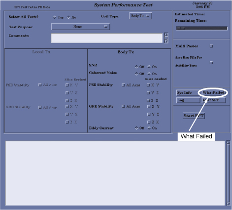

- 00000018WIA30A10F20GYZ
- id_131062982.14
- Sep 12, 2025 2:53:21 AM
SPT Body Check
Prerequisites
| Personnel requirements | |||
|---|---|---|---|
| Required persons | Preliminary requirements | Procedure | Finalization |
| 1 | - | 60 minutes | - |
| Tools and test equipment | |||
|---|---|---|---|
| Item | Quantity | Part number | Manufacturer |
| Service Foam Positioner | 1 | 5554839 | - |
| Head TLT Sphere (for 1.5T) | 1 | 46-265826G6 | - |
| Phantom, 17 cm Sphere with Spout (SWS) | 1 | 5967320 | - |
| HNA SWS Phantom Positioner | 1 | 5962014 | - |
| Compatible Head Coil for MR system | 1 | Various | - |
| TDI Head Neck Array (HNA) | 1 | 5015300 | - |
| SPT Short Loader with Sphere Assembly | 1 | 2125244 | - |
| Required conditions |
|---|
| Cancel all previous exams. Click End Exam. |
| Remove any patient positioning devices, such as patient restraints or other attached devices. |
| Insert an FE or Advanced Service Key into USB port on host computer. |
About this task
Important After SPT begins, you can stop it at any time by clicking Abort SPT or Quit SPT. If you abort the test, all valid test results are assembled into a results file. See Troubleshooting SPT Problems for additional information about clearing conditions that can occur after an untimely abort.
SPT body check with the Sphere with Spout (SWS) phantom is for systems above MR31.0 and that possess a Sphere with Spout (SWS) phantom.
Positioning Short Body Loader with Body Sphere
About this task
Procedure
Invoking SPT Full Test Mode
Procedure
- To start the SPT Full Test tool from the Service Browser, select
the Image Quality tab and follow the steps
shown in the illustration below.
Figure 2. Starting SPT Test Tool 
Troubleshooting SPT Problems
About this task
- Sptreset
- If a problem occurs when exiting SPT in an unusual manner, and the system configuration is not normal, type the following in a C-shell:
cd /usr/g/service/cclass/spt
and press Enter.
sptresetThis puts all the files and configuration values back in their original condition.
- T File Cleanup
- File space management tool. It cleans up the /usr/g/service/data directory. See the procedure for T File Cleanup for more information (found in Software > System level software utilities in the documentation).
- WhatFailed
- A quick way to know which SPT tests failed. The preferred way to see the SPT results is by using Report Manager and SPT Stability Viewer (if applicable). This utility scans through user-selected SPT result files and reports what portion of the test failed, and the actual result and test spec for that test.
Figure 4. WhatFailed Application 
Procedure
To run the WhatFailed utility, you can either:
- Open a C-shell from the Common Service Desktop, then type: whatFailed (case sensitive) and press Enter, or
- Select the WhatFailed button on the System Performance Test GUI.
Result
A menu of all the SPT files for that system displays. Select one of the tests (or quit). The utility reads the file comparing each test (except for Coherent Noise) against its limits.
If there are no failing values in the file, you see the following message:
WhatFailed does not check Eddy Current results. Please use Report Manager to see Eddy Current PASS/FAIL and specs.
Press Enter to continue. The system displays each failure it finds one at a time. Press Enter to move through the list of failures.Viewing Results - Report Manager Tool
About this task
Viewing Specification Files
About this task
Procedure
Finalization
Procedure
- Complete a TPS reset, which takes a few minutes, after completing SPT.
- If for any reason an SPT scan is aborted, check the error log to determine why, and then determine next steps.
- Remove service equipment from the system.